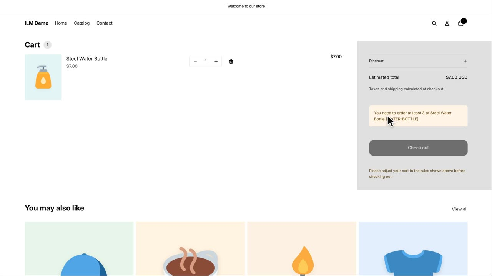
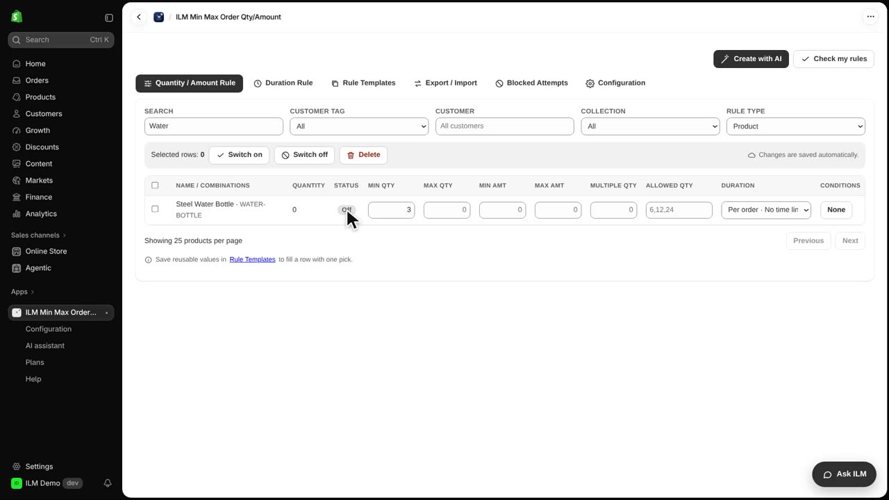
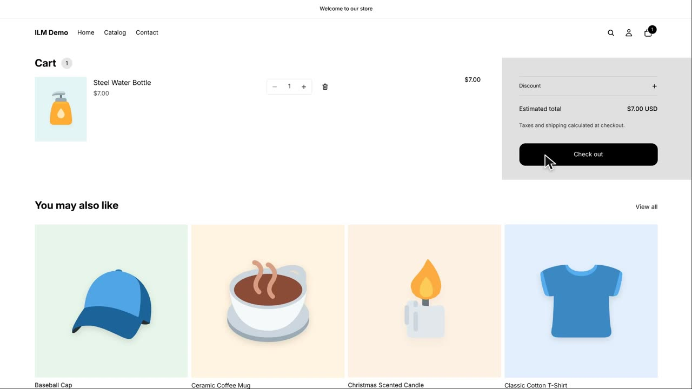
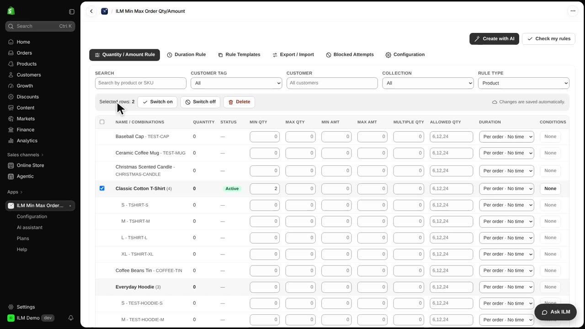

Sometimes you want to pause a rule without losing the values you set. That is exactly what switching rules on and off does in the ILM Min Max Order Qty/Amount app. In this lesson you will switch rules off and on, one at a time and in bulk, using the ILM Demo store. We start with the Steel Water Bottle, which currently has a minimum quantity rule.
The Steel Water Bottle rule says a shopper must buy at least three. In the storefront cart, adding just one bottle is refused, so the shopper sees the minimum quantity message and cannot check out.

Back in the app, find the Steel Water Bottle row in the rule grid and click its Active badge. The badge changes to Off, but the minimum quantity value of three stays saved in the row. The rule is now paused, not deleted, so you can switch it back on later without retyping anything.

Now return to the storefront cart with the same single bottle. This time the cart is fine and the checkout button is available, because the rule is off. The shopper can buy one bottle again, exactly as they could before the rule existed.

To change many rules at once, tick the checkboxes on their rows. Here we select the Spiral Notebook and the Classic Cotton T-Shirt. A bar appears above the table with Switch on, Switch off and Delete, so you can apply one action to every selected rule together.

We click Switch off in that bar, and both the Spiral Notebook and the Classic Cotton T-Shirt rules turn Off while keeping their values. Then we deselect the Spiral Notebook, keep the Classic Cotton T-Shirt selected, and click Delete. After confirming, the Classic Cotton T-Shirt rule is removed completely and its row disappears from the grid.